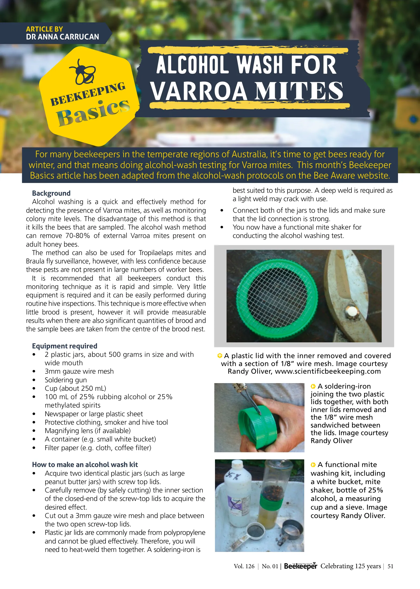

Background
Alcohol washing is a quick and effectively method for
detecting the presence of Varroa mites, as well as monitoring
colony mite levels. The disadvantage of this method is that
it kills the bees that are sampled. The alcohol wash method
can remove 70-80% of external Varroa mites present on
adult honey bees.
The method can also be used for Tropilaelaps mites and
Braula fly surveillance, however, with less confidence because
these pests are not present in large numbers of worker bees.
It is recommended that all beekeepers conduct this
monitoring technique as it is rapid and simple. Very little
equipment is required and it can be easily performed during
routine hive inspections. This technique is more effective when
little brood is present, however it will provide measurable
results when there are also significant quantities of brood and
the sample bees are taken from the centre of the brood nest.
Equipment required
•
2 plastic jars, about 500 grams in size and with
wide mouth
•
3mm gauze wire mesh
•
Soldering gun
•
Cup (about 250 mL)
•
100 mL of 25% rubbing alcohol or 25%
methylated spirits
•
Newspaper or large plastic sheet
•
Protective clothing, smoker and hive tool
•
Magnifying lens (if available)
•
A container (e.g. small white bucket)
•
Filter paper (e.g. cloth, coffee filter)
How to make an alcohol wash kit
•
Acquire two identical plastic jars (such as large
peanut butter jars) with screw top lids.
•
Carefully remove (by safely cutting) the inner section
of the closed-end of the screw-top lids to acquire the
desired effect.
•
Cut out a 3mm gauze wire mesh and place between
the two open screw-top lids.
•
Plastic jar lids are commonly made from polypropylene
and cannot be glued effectively. Therefore, you will
need to heat-weld them together. A soldering-iron is
A plastic lid with the inner removed and covered
with a section of 1/8” wire mesh. Image courtesy
Randy Oliver, www.scientificbeekeeping.com
For many beekeepers in the temperate regions of Australia, it’s time to get bees ready for
winter, and that means doing alcohol-wash testing for Varroa mites. This month’s Beekeeper
Basics article has been adapted from the alcohol-wash protocols on the Bee Aware website.
ARTICLE BY
DR ANNA CARRUCAN
BEEKEEPING
ALCOHOL WASH FOR
VARROA MITES
best suited to this purpose. A deep weld is required as
a light weld may crack with use.
•
Connect both of the jars to the lids and make sure
that the lid connection is strong.
•
You now have a functional mite shaker for
conducting the alcohol washing test.
A soldering-iron
joining the two plastic
lids together, with both
inner lids removed and
the 1/8” wire mesh
sandwiched between
the lids. Image courtesy
Randy Oliver
A functional mite
washing kit, including
a white bucket, mite
shaker, bottle of 25%
alcohol, a measuring
cup and a sieve. Image
courtesy Randy Oliver.
Vol. 126 | No. 01 |
Celebrating 125 years | 51